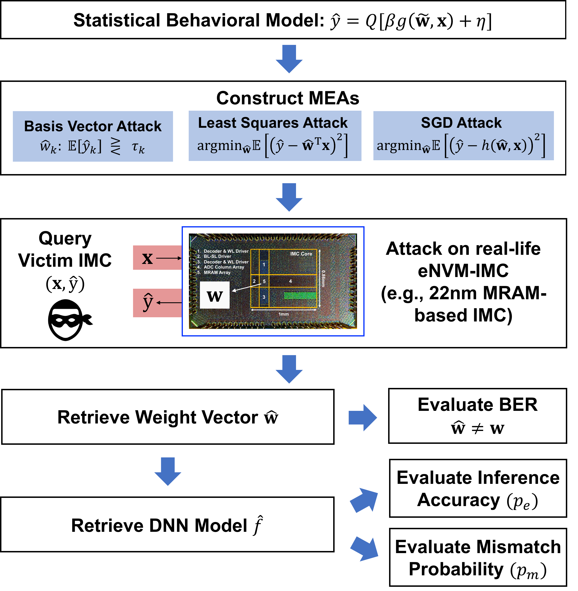
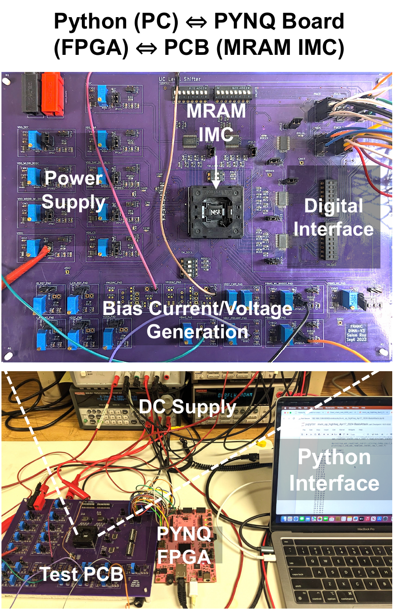

02 · FROM QUERIES TO A MODEL
Analog noise is not an automatic defense.
An attacker with input-output query access uses the statistics of the IMC computation to estimate the stored weights. Repeated or optimized queries can recover a useful model even when individual outputs are noisy.

CHOOSE AN ATTACK
ATTACK 01
Probe one coordinate at a time.
Basis-vector inputs isolate individual stored weights. Repeated observations estimate the output statistic and a threshold maps the estimate back to a weight value.
- Signal used
- Per-weight output statistic
- Core operation
- Threshold detection
- Role
- Simple statistical baseline

THE EXPERIMENTAL ANCHOR
Attack the chip. Then generalize with a silicon-validated model.
The measured MRAM prototype anchors the security conclusions in real circuit behavior. The TCAD analysis then uses a validated behavioral model to vary device, circuit, architecture, and operating parameters beyond the single chip.